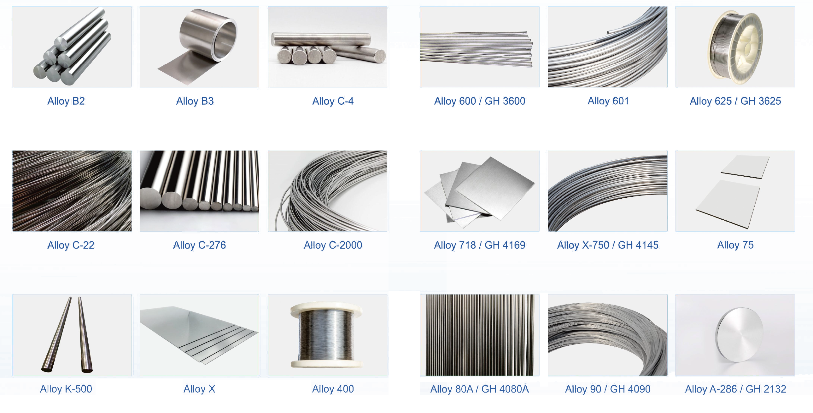
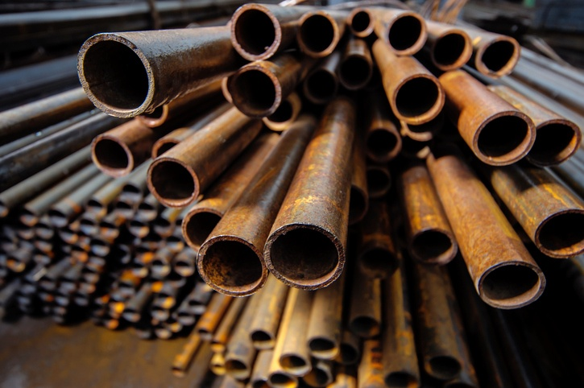
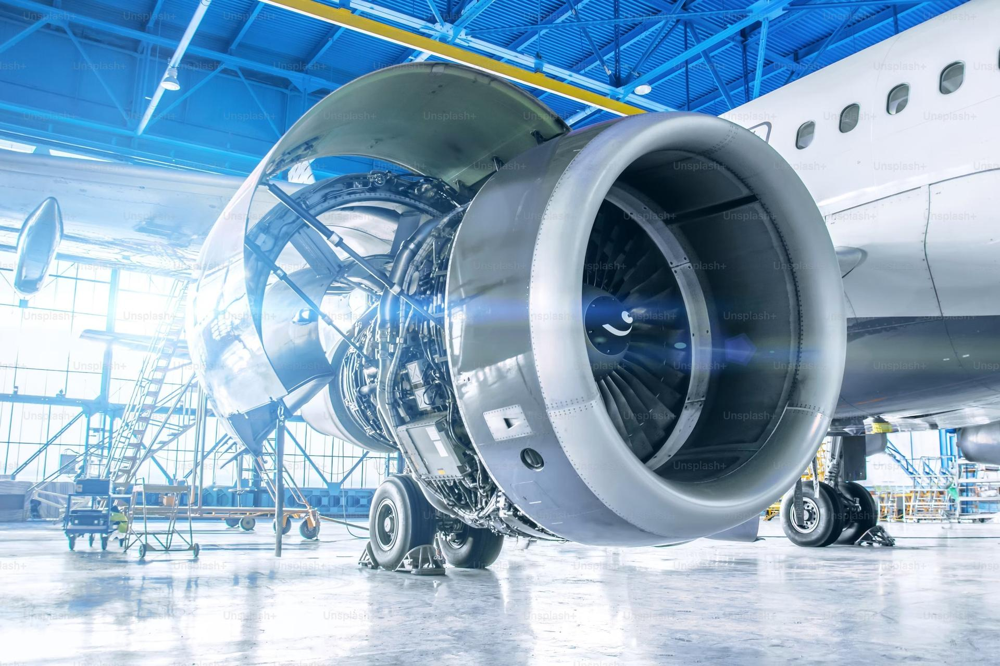

Choosing the Right Nickel Welding Wire
How to match alloy grade, AWS classification and diameter to your base metal and service conditions.
Read Article →
How to match alloy grade, AWS classification and diameter to your base metal and service conditions.
Read Article →
From oil & gas to aerospace — where each nickel alloy filler delivers the most value.
Read Article →Preheat, interpass control, shielding gas and joint cleaning tips to avoid porosity and cracking.
Read Article →
Understanding pitting, crevice and stress-corrosion behaviour of nickel-chromium-molybdenum alloys.
Read Article →
Why Alloy 718 and X-750 dominate hot-section component fabrication.
Read Article →
Choosing the right process for productivity, quality and joint accessibility.
Read Article →